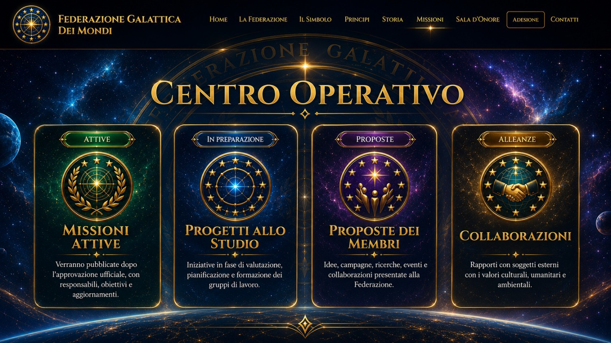

Alleanza universale per la pace e la giustizia dei popoli
Un progetto culturale, umanitario e scientifico rivolto alla tutela della Terra, alla conoscenza e alla cooperazione tra i popoli.
Prevenzione dei conflitti, dialogo e rispetto della vita.
Dignità, responsabilità, verità e tutela dei diritti.
Protezione dell’ambiente, degli oceani e della biodiversità.
Ricerca, formazione, cultura e progresso scientifico responsabile.
Il progetto riunisce principi, storia, missioni, membri onorari, memoria delle persone scomparse e canali di adesione.
Apri il Centro operativo